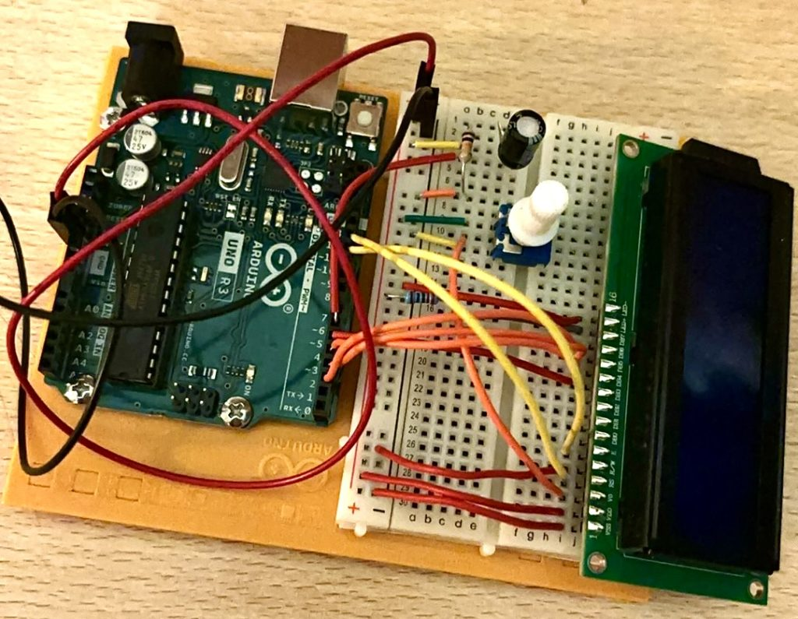

In this project, I used Arduino to create a crystal ball that can “predict” the future. It’s a fun interactive installation where users can ask the all – knowing crystal ball a question and then get an answer by flipping it over. Although the answers are pre – set, the content can be customized as needed. Through the combination of technology and creativity in this project, I not only learned the basic operations of Arduino but also gained a deeper understanding of how to design and implement interactive experiences.
During the production process, I used an Arduino board and a tilt switch to simulate the action of shaking the crystal ball, thus randomly selecting an answer. In addition, I utilized an LCD display to show the answer. The LCD screen supports 16 columns and 2 rows, with a total of 32 characters. Despite having many pins, only some necessary pins need to be connected to ensure the screen can be powered and communicate properly. When implementing the hardware connection, I gained a more in – depth understanding of circuit layout, communication protocols (such as I2C), and the Arduino Liquid Crystal library.
Through this project, I not only honed my hardware and programming skills but also experienced the joy of bringing entertainment and surprises to users through interactive installations. It made me realise that simple technologies can become very interesting through creative design. I hope to further integrate such interactive elements into more complex designs in the future to create a more immersive experience for users.